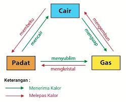
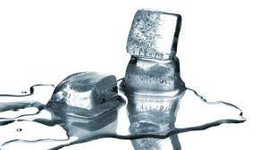
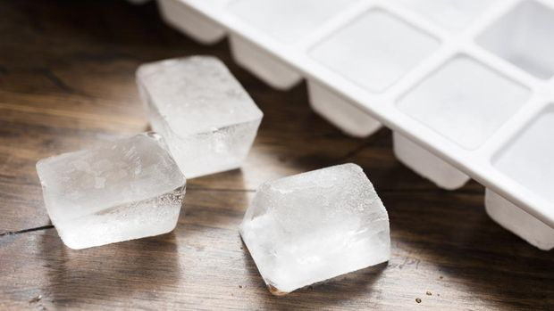
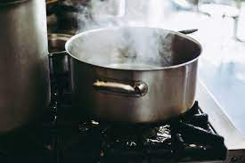
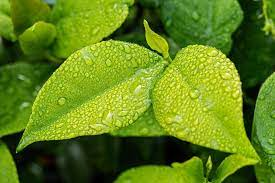
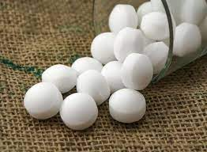
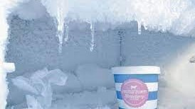

Perubahan wujud benda merupakan salah satu gejala perubahan bentuk suatu benda atau zat dari satu jenis ke jenis yang lainnya. Proses perubahan itu terjadi dengan berbagai cara dan dapat dilihat oleh kasat mata. Benda atau zat itu sendiri terdiri dari tiga jenis, yaitu padat, cair, dan gas.
1. Benda cair
Suatu benda digolongkan sebagai benda cair jika mempunyai sifat:
-menempati ruang,
-mempunyai massa,
-memiliki bentuk yang berubah-ubah dan tidak tetap, mengikuti bentuk wadah tetapi volumenya tetap, dan
-mengalir dari tempat yang tinggi ke tempat yang rendah.
2. Benda gas
Suatu benda digolongkan sebagai benda gas apabila memiliki sifat:
-menempati ruang,
-memiliki massa, dan
-mempunyai tekanan
3. Benda padat
Suatu benda digolongkan sebagai benda padat bila memiliki sifat:
-bentuknya akan selalu tetap meski dipindah dari satu wadah ke wadah lainnya,
-volume tetap, dan
-memiliki massa.
DI alam terdapat enam perubahan wujud benda. Perubahan itu adalah mencair, membeku, menguap, mengembun, menyublim, dan mengkristal. Perubahan wujud benda bisa terjadi ketika sebuah benda mengalami perubahan suhu, hal itu seperti ketika benda dipanaskan atau didinginkan

Perubahan wujud benda padat menjadi cair disebut dengan mencair. Contoh dari perubahan wujud benda mencair yaitu Es batu ketika didiamkan diluar freezer lama-kelamaan akan menjadi air.

Membeku merupakan perubahan wujud benda cair ke padat. Biasanya, perubahan wujud ini dapat ditemukan pada proses pembuatan es batu.Pada awalnya, es batu merupakan air yang tak lain benda cair, lalu air tersebut dimasukkan ke dalam freezer dan menjalani proses pembekuan.

Perubahan wujud benda cair ke gas disebut dengan menguap. Contohnya saat kita memasak air dan kemudian air itu mendidih, maka muncul sedikit asap panas yang disebut dengan uap.

perubahan wujud benda gas ke cair disebut dengan mengembun. Proses ini kerap ditemui saat Pengembunan di pagi hari.

Perubahan wujud benda padat ke gas disebut dengan menyublim. Biasanya, contoh penyubliman terjadi pada kapur barus di dalam lemari pakaian.Kapur barus tersebut lama kelamaan akan habis karena berubah menjadi gas yang menyebar ke udara.

Terakhir adalah perubahan wujud benda gas ke padat disebut mengkristal. Contohnya yaitu bunga es yang terdapat di dalam freezer atau salju
